01. App opened on login screen
passed · 4.1s
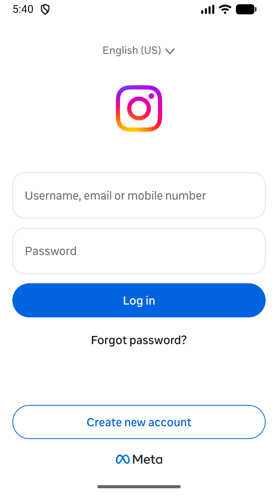
02. Tap "Use another profile"
passed · 7.9s
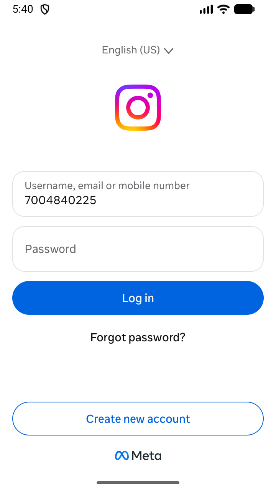
03. Enter username
passed · 2.7s
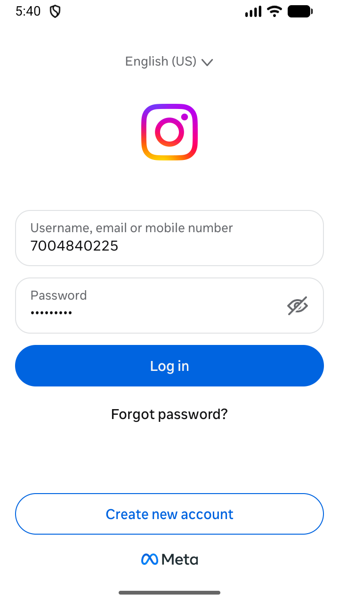
04. Enter password
passed · 2.4s
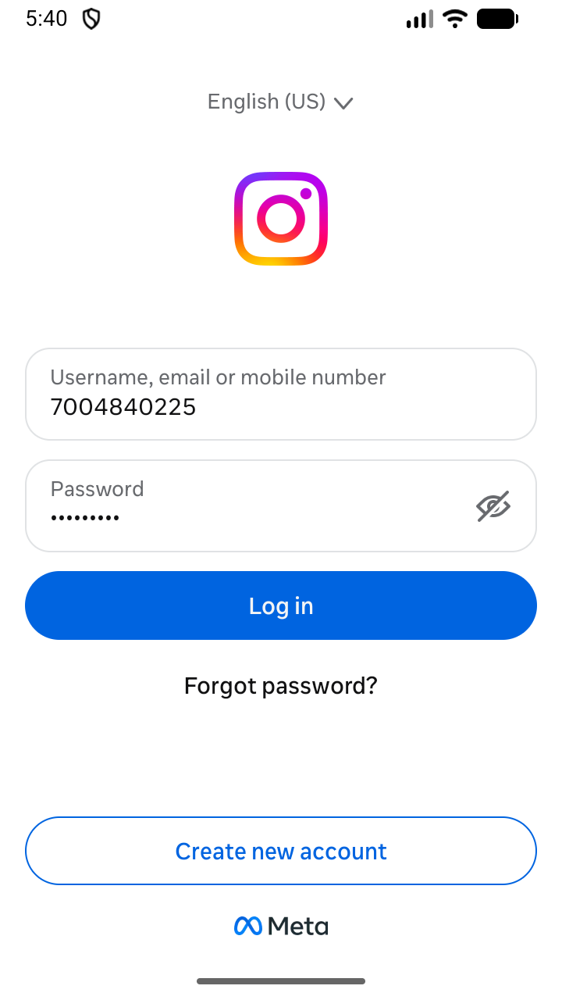
05. Hide keyboard
passed · 4.8s
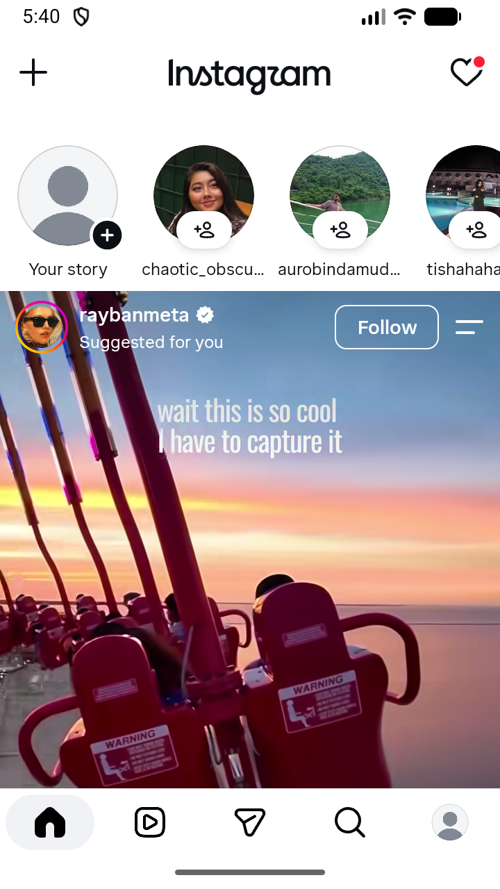
06. Tap "Log in"
passed · 29.1s
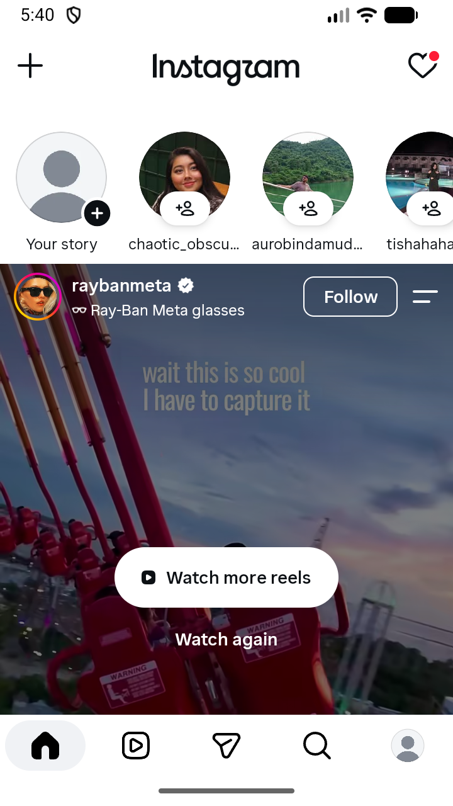
07. Home feed loaded
passed · 9.7s
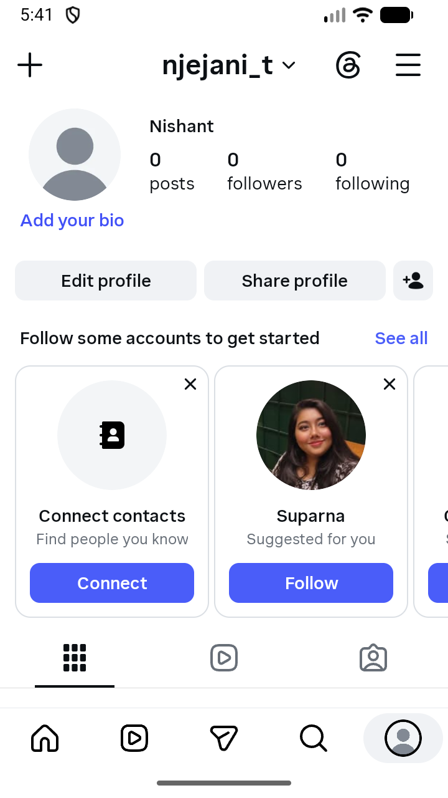
08. Open Profile tab
passed · 12.5s
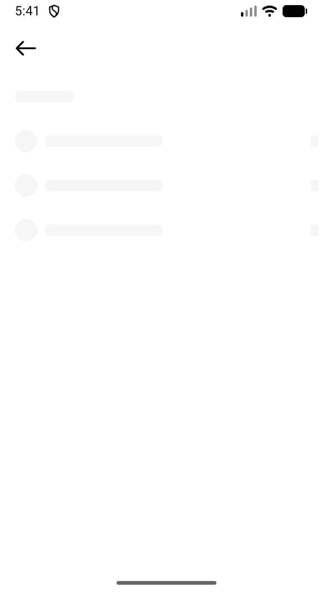
09. Open Options menu
passed · 4.2s
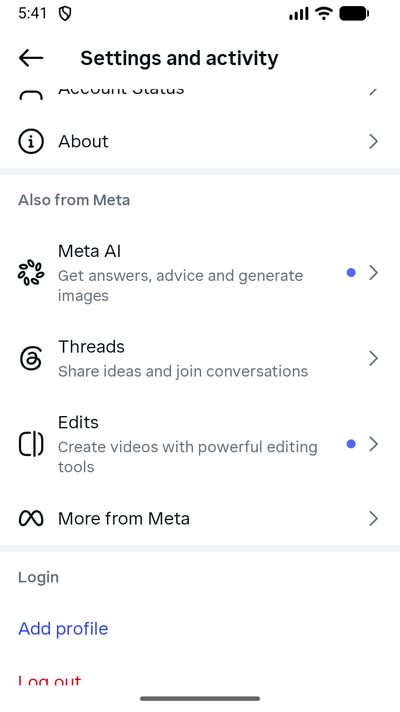
10. Scroll menu to bottom
passed · 20.1s
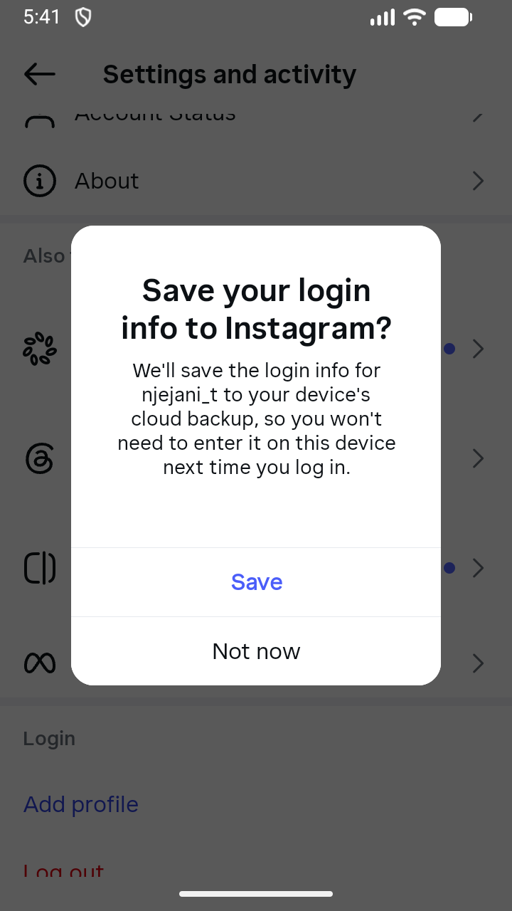
11. Tap "Log out"
passed · 4.3s
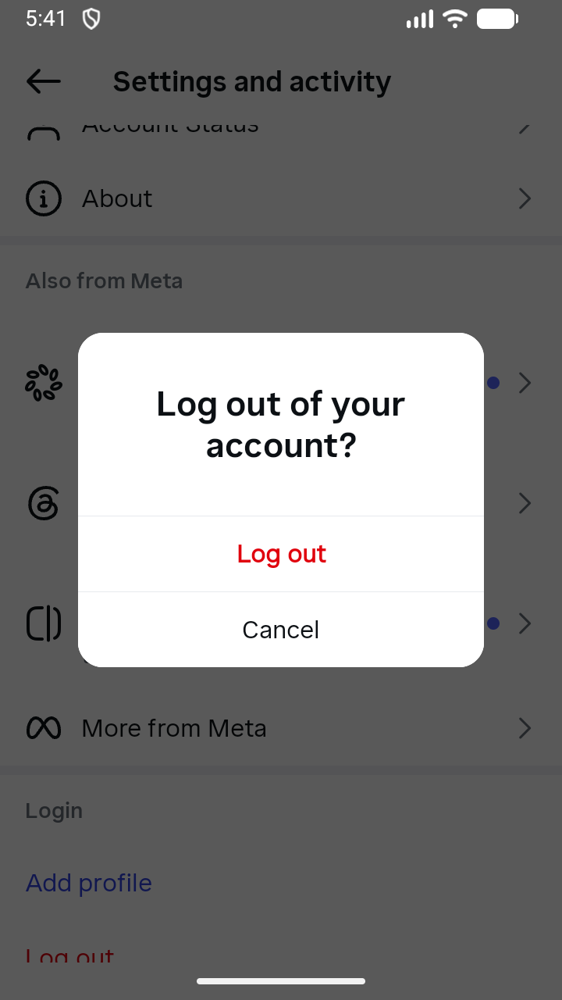
12. Tap "Not now" on save login info
passed · 2.3s
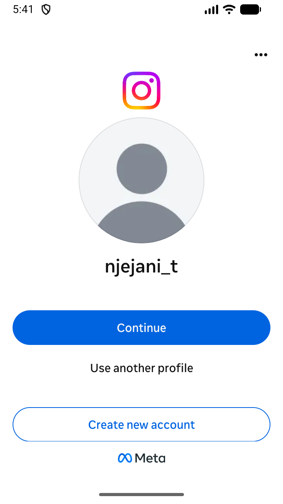
13. Confirm "Log out"
passed · 11.6s

14. Logged out – login screen shown
passed · 1.6s